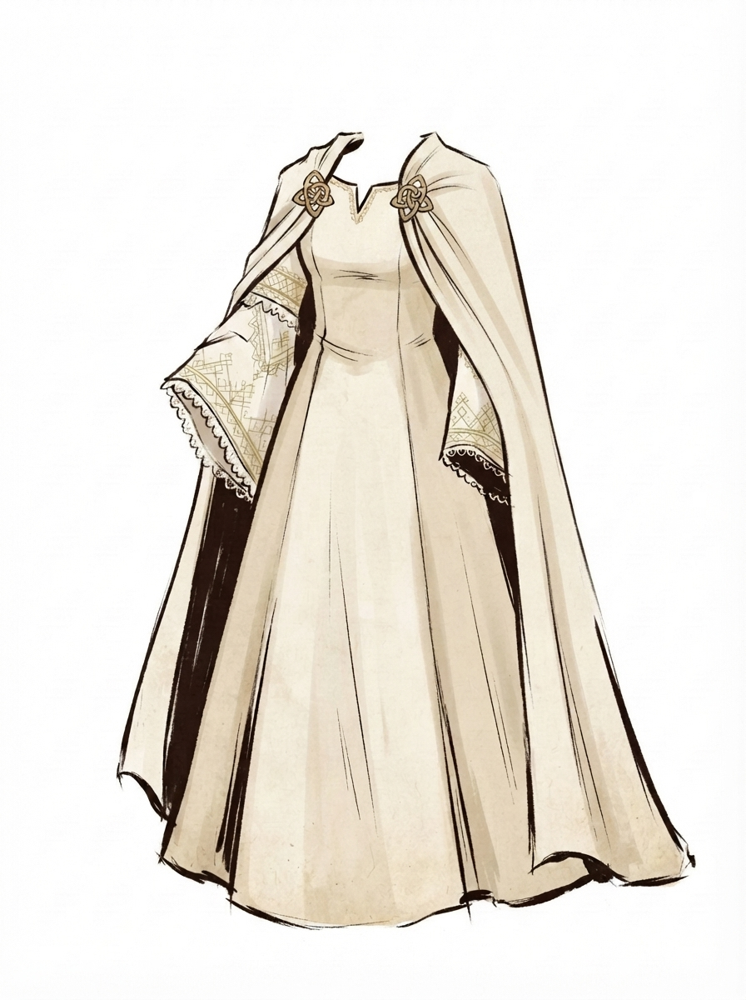
#1
Свадебное платье
A floor-length, structured but flowing ivory woolen dress features a subtle V-neck with delicate gold wire embroidery along the collar. Dramatically wide, belled sleeves open to reveal inner cuffs of intricate, geometric light-gold patterns and fine white lace trim. A matching heavy ivory cloak, fastened at the shoulders with ornate, metallic gold Celtic knot brooches, drapes elegantly over the entire ensemble.
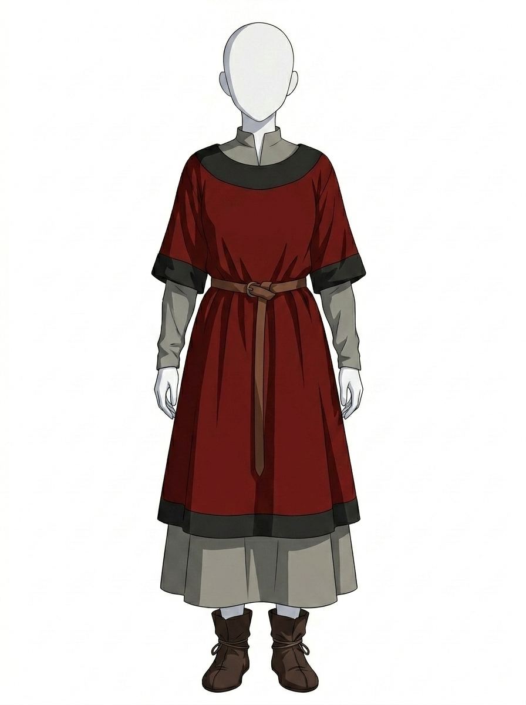
#2
Туника с поясом
A dominant, rich deep-red over-tunic with a loose, A-line silhouette. The over-tunic features a prominent, wide, rounded charcoal-grey neck panel that forms a contrasting bib detail, topped with a small, stand-up mandarin-style collar in grey. It has short, flared, three-quarter length sleeves that are finished with a matching broad charcoal-grey band. Cinching the waist is a slim, dark-brown leather-textured belt tied in a simple, decorative knot with a long, flowing tail. The hem of the deep-red over-tunic is calf-length (midi) and is also edged with a broad charcoal-grey band. Layered beneath is a full-length, cool-grey tunic, with form-fitting long sleeves extending to the wrists and a full, flowing ankle-length skirt that extends below the red over-tunic hem. The outfit is completed by ankle-length, rustic dark brown leather boots. they feature a multiple-wrap of a thin tan leather cord secured around the ankle and lower shaft
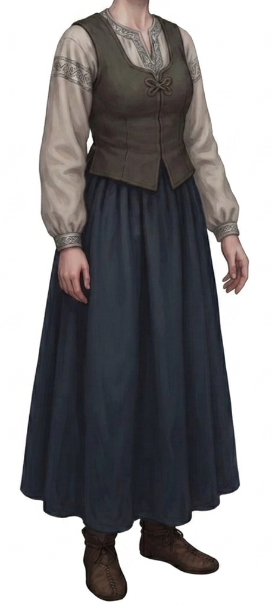
#3
Туника с жилетом
features a light grey long-sleeved tunic adorned with dark patterned embroidery on the V-neckline and upper arms, layered with a dark brown fitted vest fastened by an ornamental closure. The outfit is completed by a long, gathered navy blue skirt and a pair of sturdy. The outfit is completed by ankle-length, rustic dark brown leather boots. they feature a multiple-wrap of a thin tan leather cord secured around the ankle and lower shaft
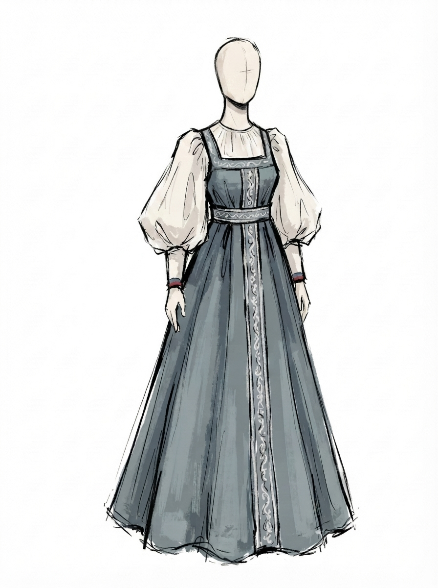
#4
Сарафан
This traditional folk-inspired outfit consists of a floor-length slate-blue sarafan layered over an off-white blouse with voluminous, billowy sleeves. The pinafore-style dress features a square neckline, a fitted high waist, and an A-line skirt decorated with intricate light-colored embroidery running down the center front, waistband, and shoulder straps. The underlying chemise has delicate gathering at the collar and fitted wrist cuffs accented with subtle red detailing, giving the overall ensemble an elegant historical character.
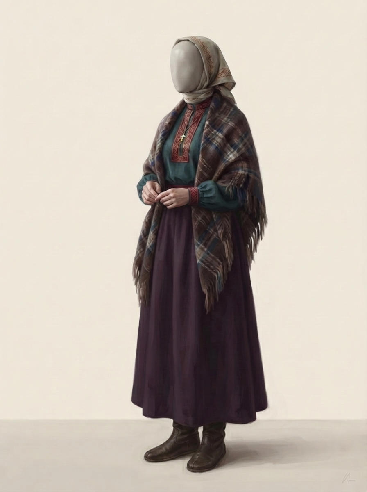
#5
С платком и шалью
natural linen embroidered kerchief with red geometric edge pattern tied at the neck, faceless mannequin head, large brown plaid woolen shawl with blue and cream checks and fringe draped over shoulders, teal tunic-style high-neck blouse with a central embroidered placket of red and gold thread and matching cuffs, simple metal cross pendant, woven red belt at the waist, floor-length deep violet velvet maxi skirt, ankle-height dark brown soft leather, soft-soled footwear.
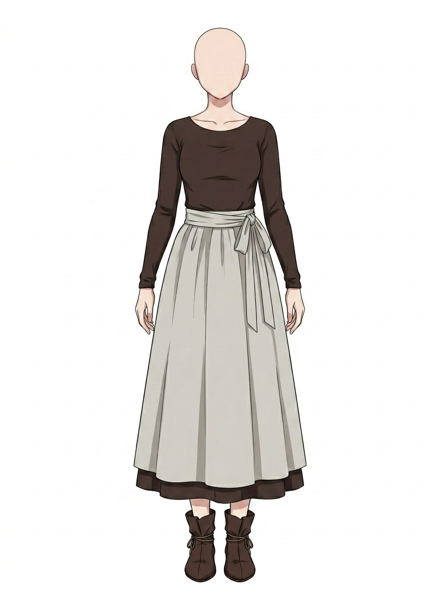
#6
Крестьянское платье
dark brown long-sleeve linen dress, simple one-piece dress, wide rounded neckline, visible collarbones, natural linen fabric, ankle-length dress, modest loose-fitting silhouette, light beige wrap apron tied at the waist, wide waistband with a large side bow, soft pleated apron, layered hem with the dark brown dress visible underneath, rustic medieval peasant clothing, Scandinavian medieval style, earthy color palette, practical historical attire, loose brown leather ankle boots with wrapped shafts and leather ties, handcrafted rustic footwear
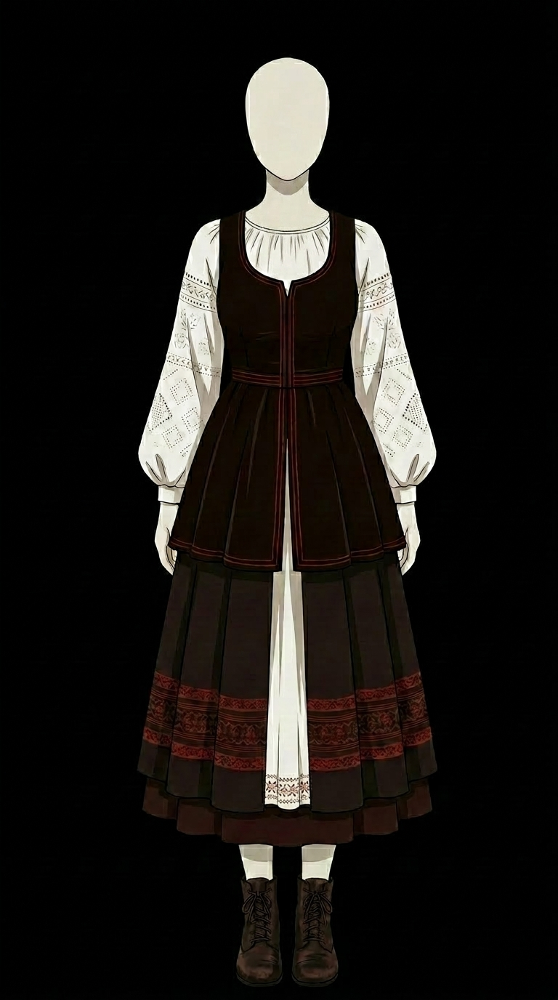
#7
Народное платье
traditional folk dress, long-sleeved white peasant blouse with puffy sleeves and subtle diamond embroidery, dark brown fitted sleeveless bodice with flared peplum waist and red trim, dark brown pleated maxi skirt featuring a wide band of red geometric embroidery near the hem, layered over a white underskirt. dark brown leather lace-up ankle boots.
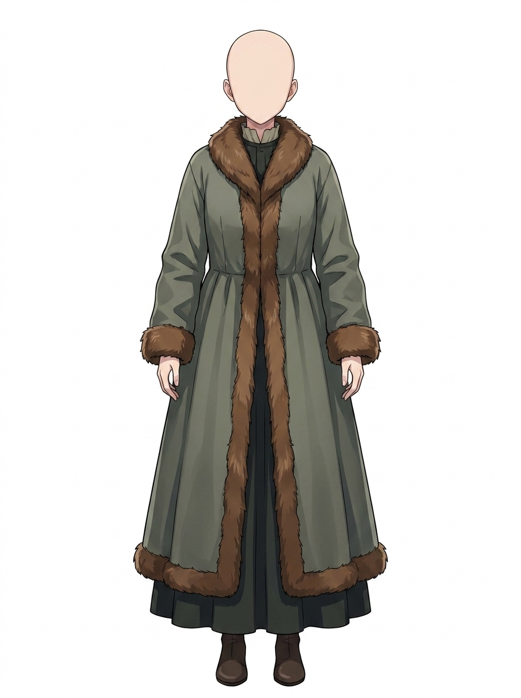
#8
Зимнее пальто
long olive-green winter coat with brown fur trim on the collar, front, cuffs and hem, dark green floor-length underdress, simple brown leather boots
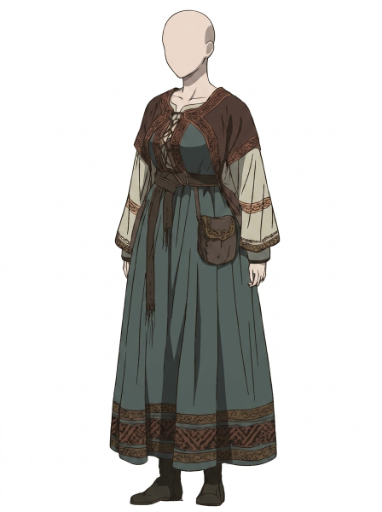
#9
С накидкой
short brown capelet, rust-orange patterned trim, front criss-cross lacing, brown cord, long muted teal-green maxi dress, rust-orange patterned trim on neckline and hem, long voluminous cream-colored sleeves, rust-orange patterned trim on cuffs, thin brown leather belt, tied waist sash, hanging leather pouch, simple dark brown boots
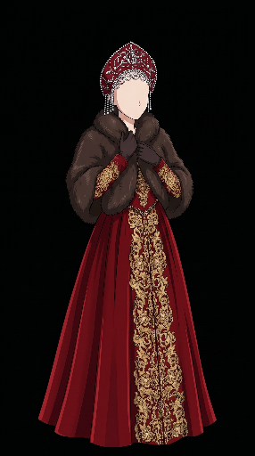
#10
Царский наряд
Traditional royal Russian female attire. A floor-length, deep crimson red pleated gown with a wide, intricate panel of heavy gold floral embroidery running down the front center. Long sleeves with matching gold-embroidered cuffs. A thick, luxurious dark brown fur mantle covering the shoulders and chest. Dark gloves. A tall, ornate red Kokoshnik headdress richly decorated with white pearls, gold filigree, and dangling pearl tassels on the sides.
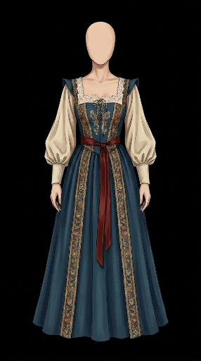
#11
Сарафан со шнуровкой
The outfit features a dried floral wreath crown made of acorns, twigs, and berries in autumn colors. She wears a long-sleeved, voluminous white-colored linen blouse with large puff sleeves. The blouse has a square neckline trimmed with white lace and a small front-lace bow. Layered over the blouse is a dark blue bodice and skirt (a Sarafan-style dress) with front-lacing and intricate gold botanical motif embroidery. The edges of the bodice and the front hem of the skirt are finished with a decorative brocade trim of gold and red patterns. A broad, burnt sienna satin ribbon is tied around her waist in a bow at the front.
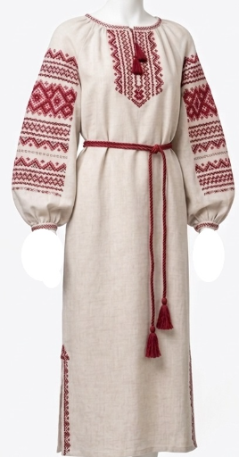
#12
С красной вышивкой
A traditional beige linen dress featuring intricate red cross-stitch embroidery on the neckline, sleeves, and hem. It has voluminous sleeves with gathered cuffs and is cinched at the waist with a matching red braided cord belt with tassel ends.